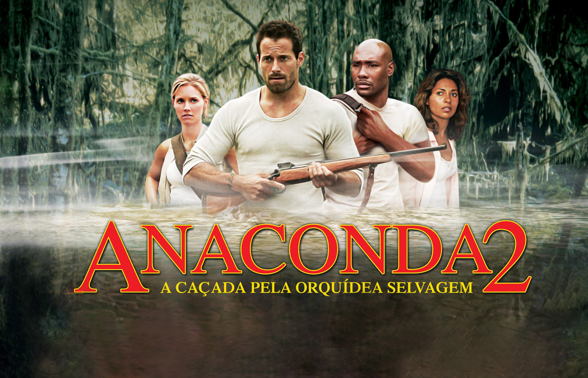
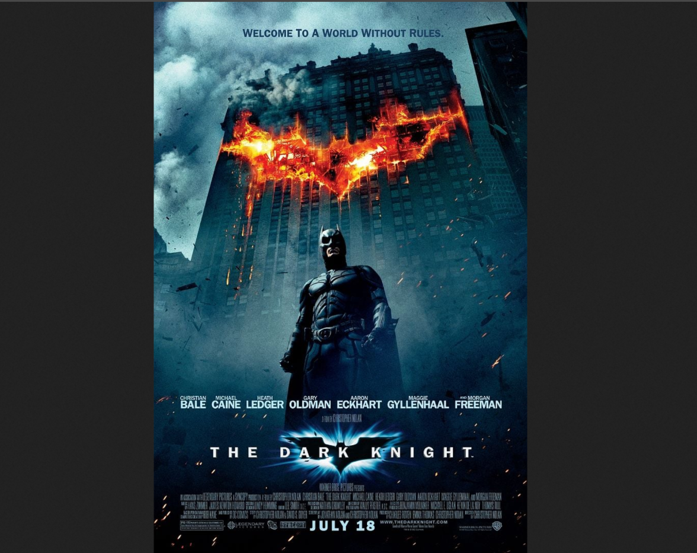
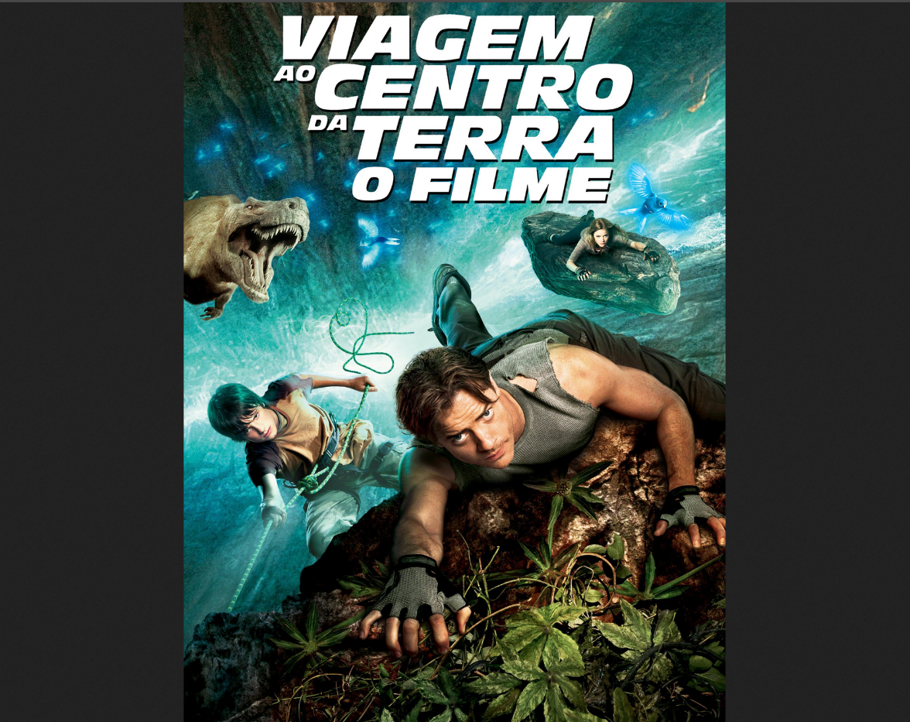
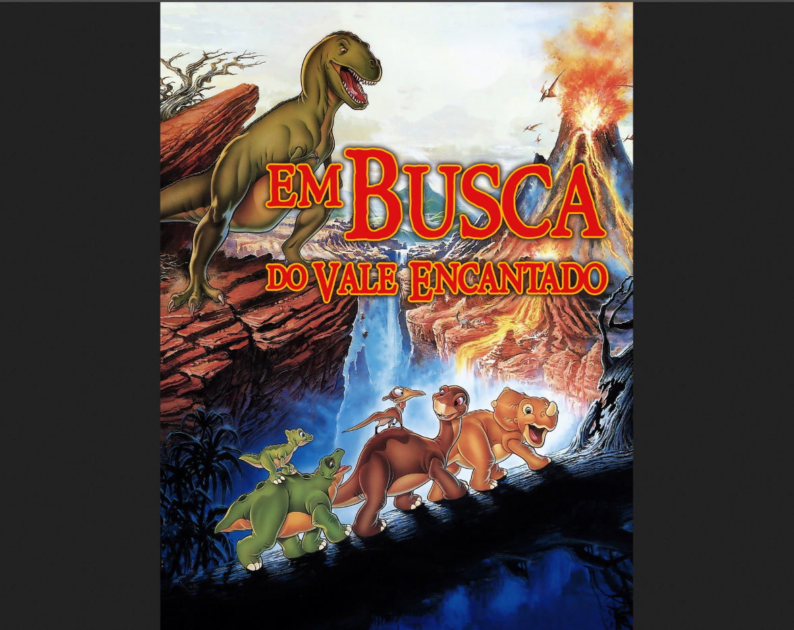
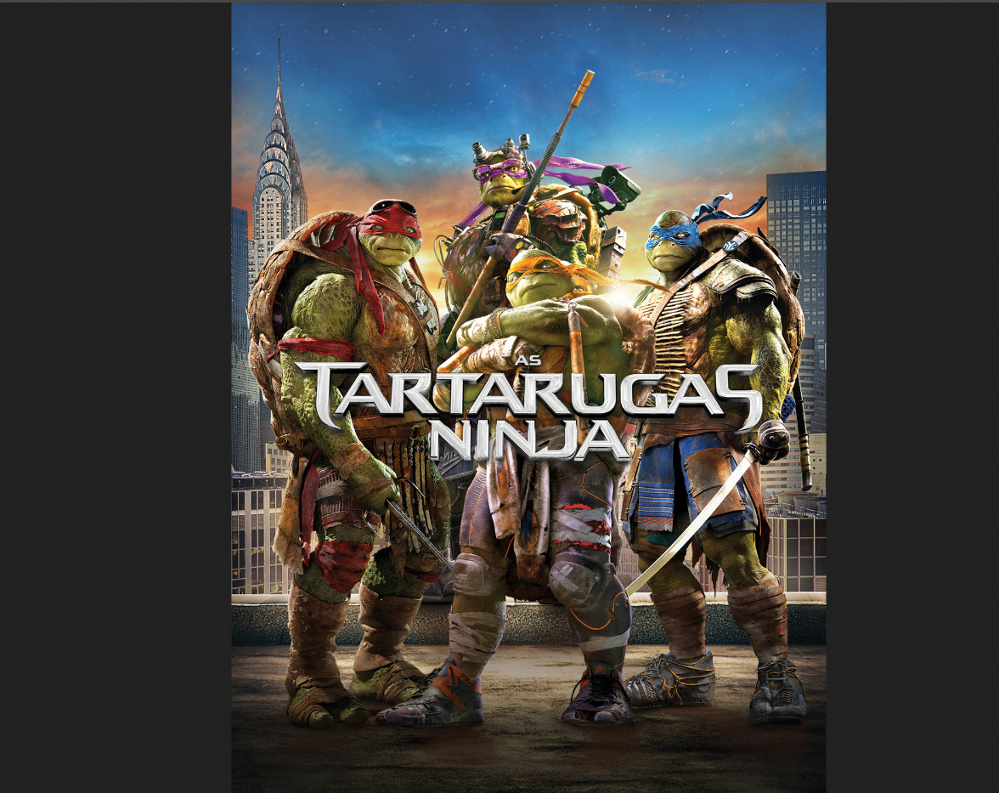

Os melhores filmes já assistidos no cinema
-

Em busca de uma rara orquídea vermelha, que floresce apenas uma vez a cada sete anos e supostamente tem propriedades que garantem vida longa, um grupo de cientistas embarca em uma expedição para a remota ilha de Bornéu. No entanto, a missão se transforma em um pesadelo quando eles descobrem que as anacondas gigantes da ilha se alimentaram da orquídea, tornando-se maiores, mais agressivas e quase indestrutíveis. Os exploradores precisam lutar para sobreviver e escapar do ninho das serpentes.
-

Dois anos depois dos eventos de Batman Begins, o crime organizado de Gotham City sofre com a vigilância implacável do Batman (Christian Bale). Com a ajuda do tenente James Gordon (Gary Oldman) e do novo promotor público Harvey Dent (Aaron Eckhart), o trio busca desmantelar a máfia de uma vez por todas. No entanto, uma figura caótica e aterrorizante conhecida como Coringa (Heath Ledger) emerge para desafiá-los. O Coringa não tem interesse em dinheiro ou poder, mas sim em espalhar a anarquia e provar que, sob pressão, até mesmo as pessoas mais boas podem sucumbir ao caos. A chegada do vilão força o Batman a cruzar a tênue linha que separa o herói do vigilante, enquanto a cidade desce à loucura
-

Jurassic World, ou Mundo Jurássico no Brasil, é uma franquia de filmes de ação e ficção científica, parte da série mais ampla Jurassic Park. Lançada em 2015, a nova trilogia se passa décadas depois dos eventos do filme original, trazendo novas histórias e personagens, como Owen Grady (Chris Pratt) e Claire Dearing (Bryce Dallas Howard).
-

O cientista Trevor Anderson (Brendan Fraser), em busca do que aconteceu com seu irmão, viaja à Islândia com seu sobrinho Sean (Josh Hutcherson) e a guia Hannah. Eles ficam presos em uma caverna e descobrem um mundo perdido no centro da Terra.
-

Em Busca do Vale Encantado" (originalmente "The Land Before Time") é um clássico filme de animação de 1988, dirigido por Don Bluth, sobre um jovem Apatossauro chamado Littlefoot que, após um desastre natural, embarca numa aventura para encontrar um local lendário de esperança, o Vale Encantado. Ao longo do caminho, ele conhece e faz amizade com outros filhotes de dinossauros, aprendendo lições sobre trabalho em equipe e a importância de superar desafios e perigos.
-

Tudo começa nos esgotos de Nova York, onde quatro tartarugas e um rato se tornam mutantes após entrarem em contato com um líquido radioativo. O rato, Mestre Splinter, treina as tartarugas na arte do ninjitsu, tornando-as guerreiros. Quinze anos depois, a cidade está mergulhada em uma onda de crimes, orquestrada pelo Clã do Pé, uma organização de ninjas criminosos liderada pelo terrível vilão Destruidor. A repórter de televisão April O'Neil, enquanto investigava os crimes do Clã do Pé, é atacada e acaba sendo salva pelas tartarugas mutantes. Após o Mestre Splinter ser sequestrado pelos ninjas do Destruidor, as quatro tartarugas, com a ajuda de April e do vigilante Casey Jones, precisam resgatar seu mestre e derrotar o Clã do Pé.